SuDu WMS · 供应链管理
库存不够？ AI 帮你采购
从 Sales Order 到 Supplier，没有人需要重复打单。
流程 1补货
已完成Sales Order 已开出客户订单已确认
警示库存不足余额不够这张订单

AI 自动开Purchase Request按缺货数量开单流程 2Approve
待 Approve等待 Approve等老板批
已完成已 Approve手机按 1 下
转成 PO不用重打
AI 自动发发给 Supplier自动发出
SuDu WMS · 基本生产管理
生产完成 库存自己更新
按 BOM 生产成品。原料出，成品进，每批都有 Batch 编号。
流程 6产品组装
产品组装开始生产
按库存生产或按订单生产
BOM多版本、多层
完成库存更新
组装完成−原料，+成品按 BOM 扣料
AI 自动生成+成品 BatchBatch 编号，方便追踪
+库存余额库存马上正确